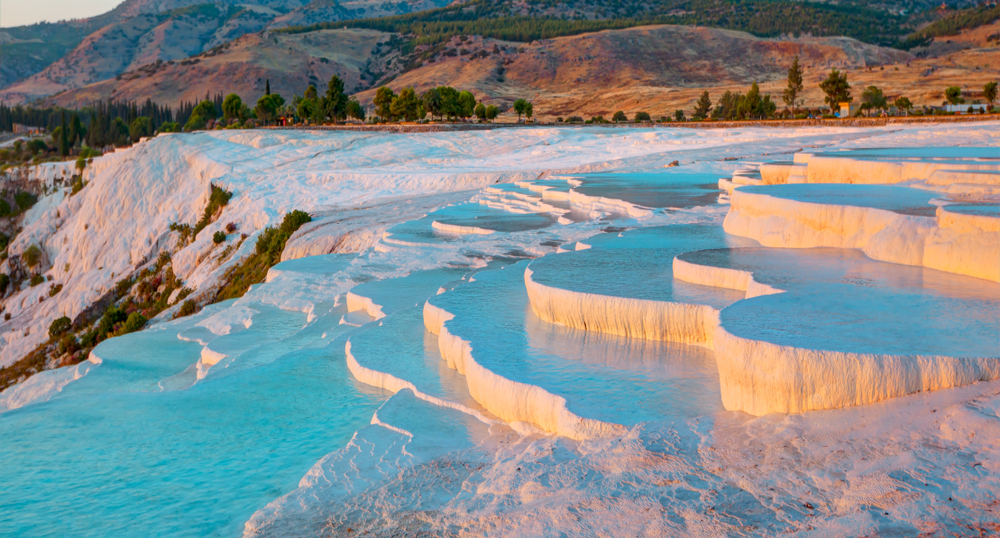
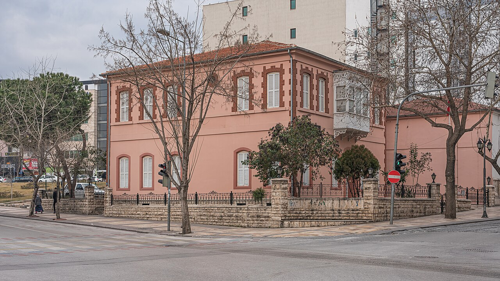

Denizli'de Gezilecek Yerler

Pamukkale
Travertenleri ile ünlü doğal bir harika.

Kaleiçi
Tarihi dokusuyla Denizli'nin kalbinde bir yer.

Çamlık Parkı
Doğa ile iç içe keyifli bir yürüyüş alanı. Mangal yapabileceğiniz ve yürüyüş yaparken hayvanat bahçesine gidebileceğiniz bir alan.

Atatürk Etnografya Müzesi
Bina, dış yapısı, planı, pencerelerinin formu ve süsleme özellikleri ile Sakız üslubu olarak tanımlanabilir. İki katlı olarak inşa edilen yapı, plan itibariyle ortadan sofalı ve bu sofaya açılan odalardan oluşmaktadır